最近は暑さも増し、本格的に夏になってきました。沢山の夏をテーマにしたワールドがclusterには存在します。
今回はそんな｢夏のワールド｣をご紹介します！
夏といえばリゾートは欠かせません！そんなプールやリゾート気分が楽しめるワールドは高千穂マサキさん作｢クラスターリゾートプール｣。
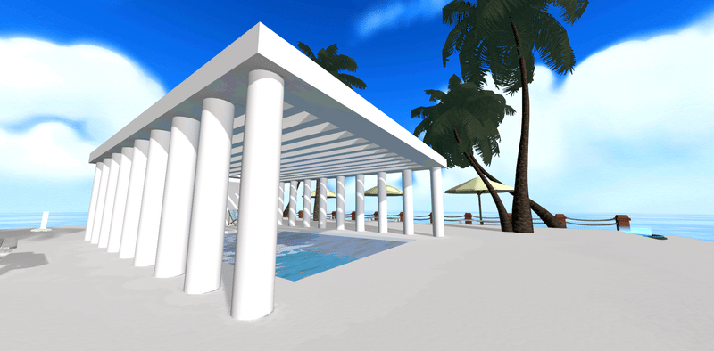
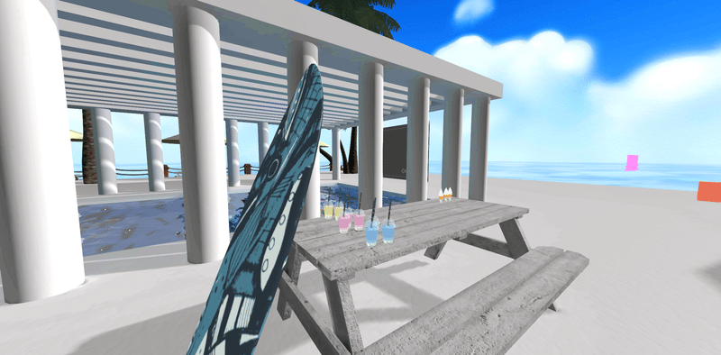
そして、夏と言ったら夏祭りも欠かせない楽しみです。
そんな気分を味わえるのが、たぬきちさん作｢cluster縁日からの脱出｣。
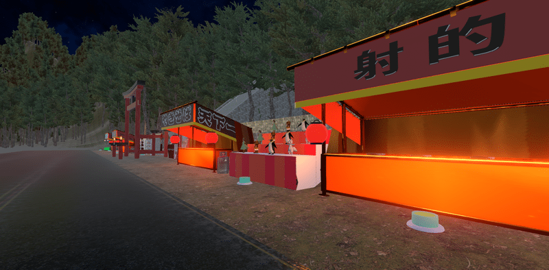
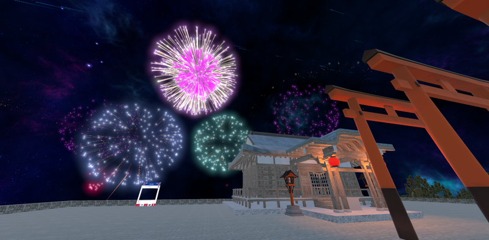
新型コロナウイルスの影響で現実で出かけにくい今、clusterで夏気分を味わってみてください。
(オリゴ糖)
「いちこんクラシックコンサート 大クラシック祭 破 ～時をかけるピアノ～」が2021年7月17日(土)20時～21時、cluster いちこんクラシックコンサートホールにて行われました。
今回のテーマは「学び」。音楽の歴史をスライド資料や演奏とともに振り返るという趣旨のコンサートです。
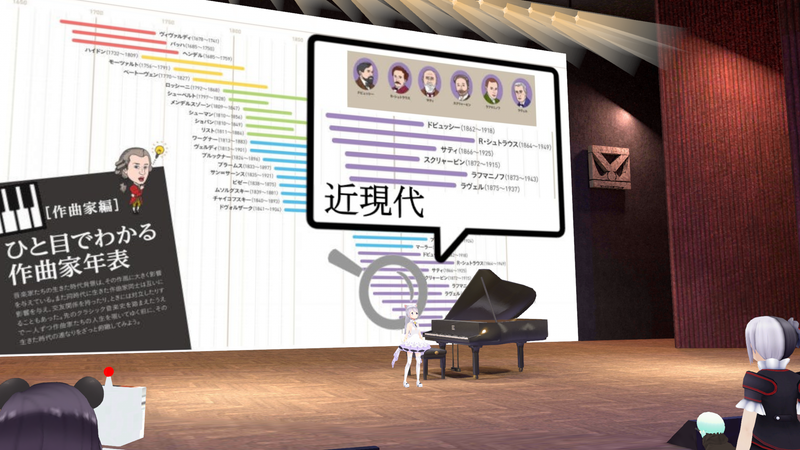
プログラムは、J.S.バッハ「平均律クラヴィーア曲集より1番&2番プレリュード」、L.V.ベートーヴェン「悲愴ソナタ第2楽章」、J.ブラームス「間奏曲op.118-2」、C.ドビュッシー「喜びの島」他、バロック～近現代までクラシックの歴史を辿る選曲です。
ピアノ奏者は、おまるさん、マスクさん、へぷたんさんの3名。また、資料出力協力をさくら(さく)さん、会場制作・演出・生配信中継をいちたろうさんが担当しました。
資料を出したり実際に弾いたりしながら歴史を解説してくれるので、クラシックになじみのない人にもわかりやすく、そのまま学校の音楽の授業として採用されてほしいくらい充実した「学び」のあるコンサートでした。
本格的な素晴らしい生演奏はもちろん、音質も申し分なく、スマホで気軽に遊びに行ける軽量な会場となっている為、クラシックコンサートを身近に楽しむきっかけにはもってこいです。次回の開催ではぜひあなたも「ブラボー！」と拍手を送りに行ってみてはいかがでしょうか？
（紅花）
clusterでは過去2回ゲームジャムが開催されており、2021年8月13日よりさらに
パワーアップしたオンラインゲームジャムイベント「ClusterGAMEJAM 2021 in SUMMER」が開催される。
今回は、受賞者は計300名以上で、スポンサー企業によるスポンサー賞・各部門賞も用意されている。さらには、特製Tシャツなどの参加賞もプレゼントされる。
また、今回は新たにGAMEJAM終了後の2週間、参加者同士での交流を深めるための「WINNER WEEK」も開催予定とのこと。
■開催スケジュール
開会式 8/13 21:15 〜
閉会式 8/15 22:00 〜
制作期間 8/13 22:00 〜
8/15 22:00
受賞作品発表会
8/22 18:00 ～
(Dolphiiiin)
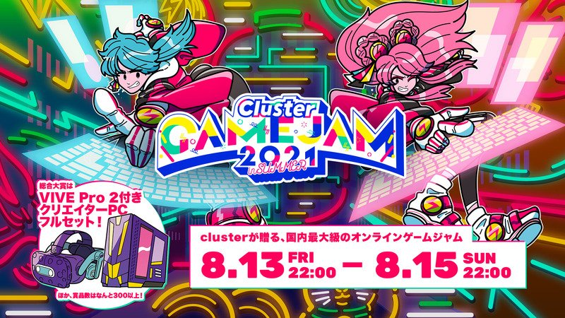
バーチャル世界の自分の姿として使われるアバター、創作物の利用方法としては珍しく改変をして楽しまれることも多くあります。
自分の髪型をアレンジするようにアバターの色を変えたり服を変えたり、アクセサリーを変えたり、様々な方法で改変はたのしまれています。
ホビーメーカー株式会社壽屋では、アバターで遊んできていた方はもちろん、これからアバターで遊びたい方の助けとなるように、Twitterのハッシュタグ機能を使い、VR向けアバターを改変する知識や技術等を投稿をうながすキャンペーンを始めました。
アバターを改変している人も、改変をしたことがない人もTwitterで「#アバ改」をみてほかの人の改変知識をみたり、「#教えてアバ改」で気になる改造について質問をしてたりしてみましょう。
■キャンペーン開催日：
2021年7月21日（水）
～8月31日（火）
（so1_)
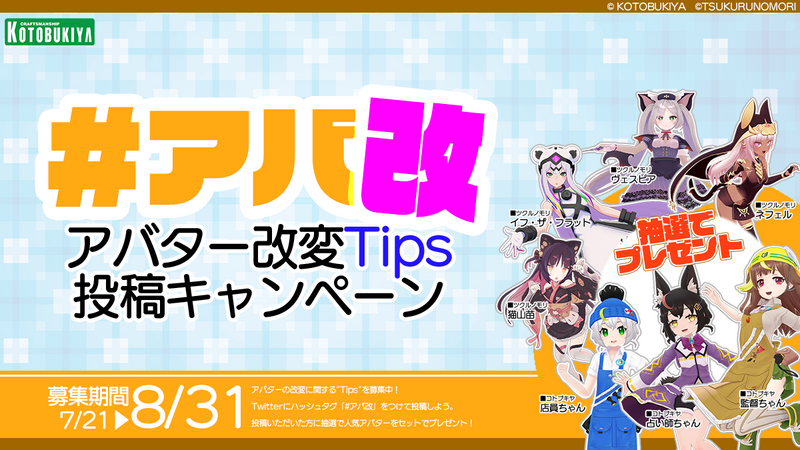
みなさんは、clusterの｢カメラ機能」を使ったことはありますか？
使い方はとってもシンプル。写真ボタンを押し、カメラを起動後、右側のシャッターボタンを押せば撮影。
これで、写真が撮れます。
さらに、clusterのカメラは実に多機能。三人称視点でカメラを起動すれば、自分が動くことなく色んな角度から撮る事ができます。
そして、上のボタンを使えば、ネームプレートを消したり、正面からの自撮りもできて便利。
表情を変えるとさらに写真撮影が楽しく。スマホやPCでもアイテムを持った手の位置で表情を変えることができます。
また、cluster公式の「Hello Cluster」内では月毎にお題企画が行われ、今月は週ごとに違ったテーマで写真を撮影するフォトコンテストが開かれました。
皆さんも、自分の感覚の赴くままに、写真を撮ってみてはいかがでしょうか。
(オリゴ糖)
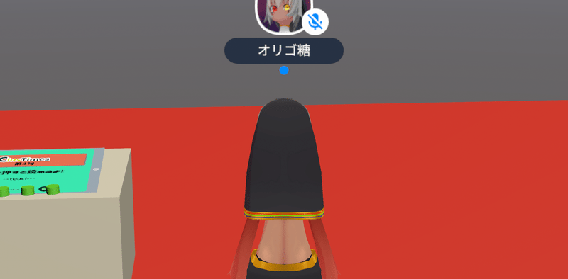
毎週火曜日、21時から開催されている「Hello
Cluster」。“clusterをもっと楽しみたいあなたへ贈る公式イベント！”というコピーのclusterの公式イベントです。cluster上のイベントとして開催されているので、いつも使っているデバイスから会場に参加できるのはもちろん、YouTube
Liveなどでも配信されています。
clusterのニュースや開発進捗、今週の人気ワールドの紹介などが行われています。また実験的機能がいち早く実装される場でもあり、直近ではイベントで表示されるアバター数の上限を解放するテストが行なわれました。
また最近盛り上がっているのがclusterユーザーの告知コーナーです。当日会場を訪れたユーザーによる挙手制でその場で1分間の告知を行います。時間制限をオーバーすると強制的に告知は終了、ステージ上空に打ち上げられます（時々その場で爆発するこことも）。もっとも時間制限をオーバーしなくても、ステージ上から降りる方法はなく、打ち上げられてしまうのですが……。
clusterの最新情報を知れるのはもちろん、多くのユーザーが会場を訪れているので、新しい出会いも待っているかもしれません。参加するとclusterをより楽しめる公式イベントです。ぜひ遊びに来てください。
（でんこ）
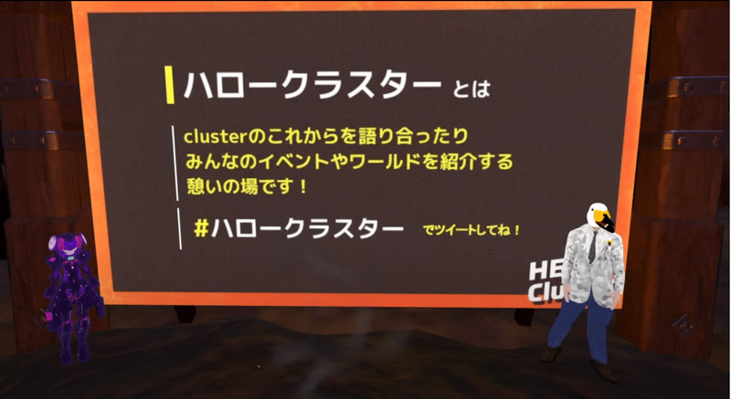
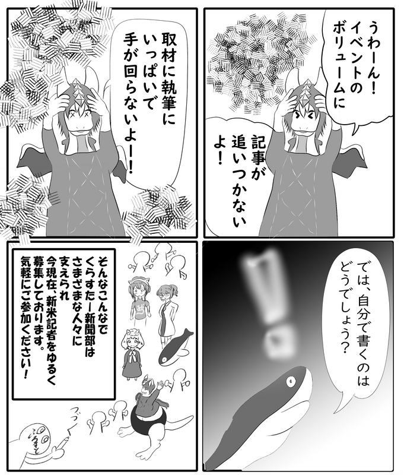
clusterで出会った人たちにひとことインタビューする連載企画。
Q1.clusterを始めたきっかけは？
Q2.普段clusterでどのように過ごしてる？
Q3.今後clusterでやってみたいことは？
の3つの質問をしていきます。
今回ご回答いただいたのは「かわしぃ」さんと「YSK」さんのお二人。
【「かわしぃ」さん】
A1.ワールドがつくりやすかったから？
A2.クリエイターの皆さんと情報交換がてらおしゃべりしてます
A3.イベントバリバリやってVアイテムを鬼のように貰いたい
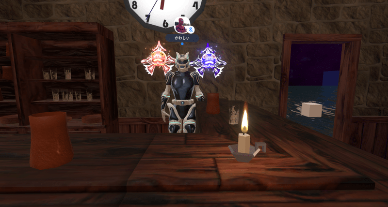
【「YSK」さん】
A1.コロナショック
A2.おしゃべりと、クリエイターさんの専門用語を覚える
A3.モデリングとUnityをもっと覚える
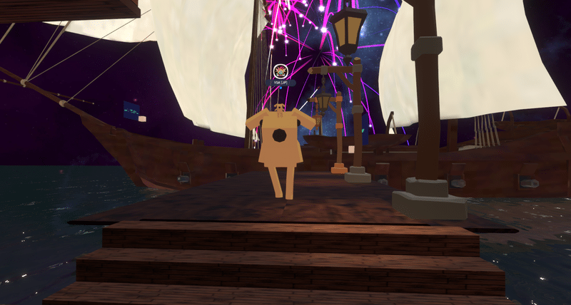
（滝 竜三）